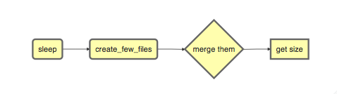
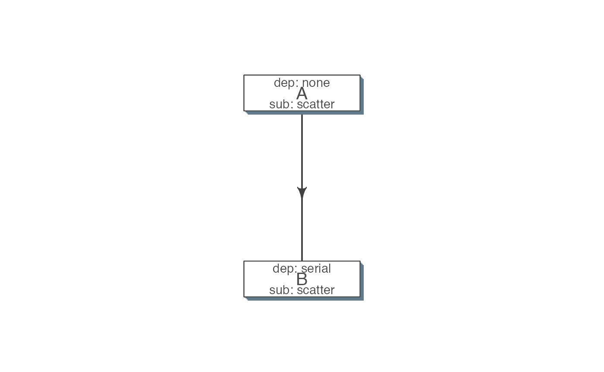
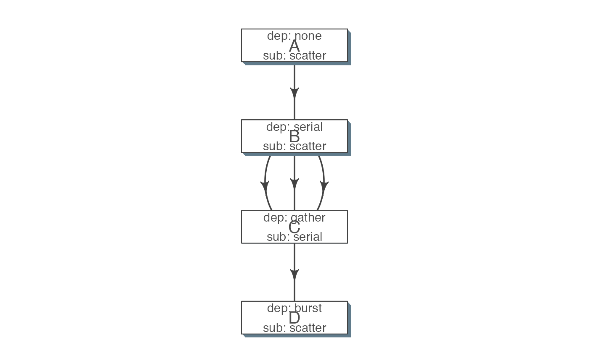

vignettes/flowr_overview.Rmd
flowr_overview.Rmd
setup()This will copy the flowr helper script to ~/bin. Please make sure that this folder is in your $PATH variable. For more details refer to setup’s help section.
Running flowr from the terminal will fetch you the following:
Usage: flowr function [arguments]
status Detailed status of a flow(s).
rerun rerun a previously failed flow
kill Kill the flow, upon providing working directory
fetch_pipes Checking what modules and pipelines are available; flowr fetch_pipes
Please use 'flowr -h function' to obtain further information about the usage of a specific function.
Consider, a simple example where we have three instances of linux’s sleep command. After its completion three tmp files are created with some random data. Then, a merging step follows, combining the tmp files into one big file. Next, we use du to calculate the size of the merged file.
NGS context This is quite similar in structure to a typical workflow from where a series of alignment and sorting steps may take place on the raw fastq files. Followed by merging of the resulting bam files into one large file per-sample and further downstream processing.
To create this flow in flowr, we need the actual commands to run; and a set of instructions regarding how to stitch the individual steps into a coherent pipeline.
Here is a table with the commands we would like to run ( or flow mat ).
| samplename | jobname | cmd |
|---|---|---|
| sample1 | sleep | sleep 10 && sleep 2;echo ‘hello’ |
| sample1 | sleep | sleep 11 && sleep 8;echo ‘hello’ |
| sample1 | sleep | sleep 11 && sleep 17;echo ‘hello’ |
| sample1 | create_tmp | head -c 100000 /dev/urandom > sample1_tmp_1 |
| sample1 | create_tmp | head -c 100000 /dev/urandom > sample1_tmp_2 |
| sample1 | create_tmp | head -c 100000 /dev/urandom > sample1_tmp_3 |
| sample1 | merge | cat sample1_tmp_1 sample1_tmp_2 sample1_tmp_3 > sample1_merged |
| sample1 | size | du -sh sample1_merged; echo ‘MY shell:’ $SHELL |
Further, we use an additional file specifying the relationship between the steps, and also other resource requirements: flow_def.
| jobname | sub_type | prev_jobs | dep_type | queue | memory_reserved | walltime | cpu_reserved | platform | jobid |
|---|---|---|---|---|---|---|---|---|---|
| sleep | scatter | none | none | short | 2000 | 1:00 | 1 | local | 1 |
| create_tmp | scatter | sleep | serial | short | 2000 | 1:00 | 1 | local | 2 |
| merge | serial | create_tmp | gather | short | 2000 | 1:00 | 1 | local | 3 |
| size | serial | merge | serial | short | 2000 | 1:00 | 1 | local | 4 |
Note: Each row in a flow mat relates to one job. Jobname column is used to link flow definition with flow mat. Also, values in previous jobs (prev_jobs) are derived from jobnames.
We use the two files described above and stitch them to create a flow object (which contains all the information we need for cluster submission).
ex = file.path(system.file(package = "flowr"), "pipelines")
flowmat = as.flowmat(file.path(ex, "sleep_pipe.tsv"))
flowdef = as.flowdef(file.path(ex, "sleep_pipe.def"))
fobj <- to_flow(x = flowmat,
def = flowdef,
flowname = "example1", ## give it a name
platform = "lsf") ## override platform mentioned in flow defRefer to to_flow’s help section for more details.
We can use plot_flow to quickly visualize the flow; this really helps when developing complex workflows.
plot_flow(fobj) # ?plot_flow for more information
plot_flow(flowdef) # plot_flow works on flow definition as wellFlow chart describing process for example 1
Refer to plot_flow’s help section for more details.
Dry run: Quickly perform a dry run, of the submission step. This creates all the folder and files, and skips submission to the cluster. This helps in debugging etc.
submit_flow(fobj)Test Successful!
You may check this folder for consistency. Also you may re-run submit with execute=TRUE
~/flowr/sleep_pipe-20150520-15-18-27-5mSd32G0Once, we have a flow we can submit it to the cluster using submit_flow
Submit to the cluster !
submit_flow(fobj, execute = TRUE)Flow has been submitted. Track it from terminal using:
flowr status x=~/flowr/type1-20150520-15-18-46-sySOzZnERefer to submit_flow’s help section for more details.
Next, you may use status to monitor the status of a flow.
flowr status x=~/flowr/runs/sleep_pipe-20150520*
| | total| started| completed| exit_status| status|
|:---------|-----:|-------:|---------:|-----------:|---------:|
|001.sleep | 10| 10| 10| 0| completed|
|002.tmp | 10| 10| 10| 0| completed|
|003.merge | 1| 1| 1| 0| completed|
|004.size | 1| 1| 1| 0| completed|Notice, how we skipped specifying the complete path. Status would try to use the basename and show status of any folder it can match. If there are multiple matched, status would show a summary of each.
Alternatively, to check a summarized status of several flows, use the parent folder. In this case the parent folder has 3 flows, and here is the summary:
flowr status x=~/flowr/runs
Showing status of: ~/flowr/runs
| | total| started| completed| exit_status| status|
|:---------|-----:|-------:|---------:|-----------:|---------:|
|001.sleep | 30| 30| 10| 0|processing|
|002.tmp | 30| 30| 10| 0|processing|
|003.merge | 3| 3| 1| 0| pending|
|004.size | 3| 3| 1| 0| pending|Scalability: Quickly submit, and check a summarized OR detailed status on ten or hundreds of flows.
Refer to status’s help section for more details.
Incase something goes wrong, one may use to kill command to terminate all the relating jobs of a single flow OR multiple flows.
kill one flow:
flowr kill_flow x=flow_wdOne may instruct flowr to kill multiple flows, but flowr would confirm before killing.
flowr kill x='~/flowr/runs/sleep_pipe'
found multiple wds:
~/flowr/runs/sleep_pipe-20150825-16-24-04-0Lv1PbpI
~/flowr/runs/sleep_pipe-20150825-17-47-52-5vFIkrMD
Really kill all of them ? kill again with force=TRUETo kill multiple flow, set force=TRUE:
kill x='~/flowr/runs/sleep_pipe*' force = TRUERefer to kill’s help section for more details.
flowr also enables you to re-run a pipeline in case of hardware or software failures.
rerun x=flow_wd start_from=<intermediate step>
rerun x=flow_wdmat = new_flowmat def = new_flowdef start_from=<intermediate step>
Refer to rerun’s help section for more details.
An easy and quick way to build a workflow is to create a set of two tab delimited files. First is a table with commands to run (for each step of the pipeline), while second has details regarding how the modules are stitched together. In the rest of this document we would refer to them as flow_mat and flow_def respectively (as introduced in the previous sections).
Let us read in examples of both these files to understand their structure.
ex = file.path(system.file(package = "flowr"), "pipelines")
flow_mat = as.flowmat(file.path(ex, "sleep_pipe.tsv"))
flow_def = as.flowdef(file.path(ex, "sleep_pipe.def"))describes commands to run:
Each row in flow mat describes one shell command, with additional information regarding the name of the step etc.
Essentially, this is a tab delimited file with three columns:
samplename: A grouping column. The table is split using this column and each subset is treated as an individual flow. Thus we may have one flowmat for a series of samples, and the whole set would be submitted as a batch.
jobname: This corresponds to the name of the step. This should match exactly with the jobname column in flow_def table described below.cmd: A shell command to run. One can get quite creative here. These could be multiple shell commands separated by a ; or &&, more on this here. Though to keep this clean you may just wrap a multi-line command into a script and just source the bash script from here.Here is an example flow_mat for the flowr described above.
| samplename | jobname | cmd |
|---|---|---|
| sample1 | sleep | sleep 10 && sleep 2;echo ‘hello’ |
| sample1 | sleep | sleep 11 && sleep 8;echo ‘hello’ |
| sample1 | sleep | sleep 11 && sleep 17;echo ‘hello’ |
| sample1 | create_tmp | head -c 100000 /dev/urandom > sample1_tmp_1 |
| sample1 | create_tmp | head -c 100000 /dev/urandom > sample1_tmp_2 |
| sample1 | create_tmp | head -c 100000 /dev/urandom > sample1_tmp_3 |
| sample1 | merge | cat sample1_tmp_1 sample1_tmp_2 sample1_tmp_3 > sample1_merged |
| sample1 | size | du -sh sample1_merged; echo ‘MY shell:’ $SHELL |
defines how to stitch pieces of the (work)flow:
Each row in this table refers to one step of the pipeline. It describes the resources used by the step and also its relationship with other steps, especially, the step immediately prior to it.
It is a tab separated file, with a minimum of 4 columns:
jobname: Name of the stepsub_type: Short for submission type, refers to, how should multiple commands of this step be submitted. Possible values are serial or scatter.prev_job: Short for previous job, this would be jobname of the previous job. This can be NA/./none if this is a independent/initial step, and no previous step is required for this to start.dep_type: Short for dependency type, refers to the relationship of this job with the one defined in prev_job. This can take values none, gather, serial or burst.These would be explained in detail, below.
Apart from the above described variables, several others defining the resource requirements of each step are also available. These give great amount of flexibility to the user in choosing CPU, wall time, memory and queue for each step (and are passed along to the HPCC platform).
cpu_reservedmemory_reservednodeswalltimequeueThis is especially useful for genomics pipelines, since each step may use different amount of resources. For example, in other frameworks, if one step uses 16 cores these would be blocked and not used during processing of several other steps. Thus resulting in blockage of those cores. Flowr prevents this, by being able to tune resources granurly. Example, one may submit few short steps in short queue, and longer steps of the same pipeline in say long queue.
Most cluster platforms accept these resource arguments. Essentially a file like this is used as a template, and variables defined in curly braces ( ex. {{{CPU}}} ) are filled up using the flow definition file.
If these (resource requirements) columns are not included in the flow definition, their values should be explicitly defined in the submission template. One may customize the templates as described in the cluster support section.
Here is an example of a typical flow_def file.
| jobname | sub_type | prev_jobs | dep_type | queue | memory_reserved | walltime | cpu_reserved | platform | jobid |
|---|---|---|---|---|---|---|---|---|---|
| sleep | scatter | none | none | short | 2000 | 1:00 | 1 | local | 1 |
| create_tmp | scatter | sleep | serial | short | 2000 | 1:00 | 1 | local | 2 |
| merge | serial | create_tmp | gather | short | 2000 | 1:00 | 1 | local | 3 |
| size | serial | merge | serial | short | 2000 | 1:00 | 1 | local | 4 |
Let us use an example flow, to understand submission and dependency types.
Consider three steps A, B and C, where A has 10 commands from A1 to A10, similarly B has 10 commands B1 through B10 and C has a single command, C1. Consider another step D (with D1-D3), which comes after C.
step: A ----> B -----> C -----> D
# of cmds 10 10 1 3This refers to the sub_type column in flow definition.
scatter: submit all commands as parallel, independent jobs.
serial: run these commands sequentially one after the other.
This refers to the dep_type column in flow definition.
none: independent job.
serial: one to one relationship with previous job.
gather: many to one, wait for all commands in previous job to finish then start the current step.
burst: one to many wait for the previous step which has one job and start processing all cmds in the current step.
Using the above submission and dependency types one can create several types of relationships between former and later jobs. Here are a few examples of relationships one may typically use.
A1 --------> B1
A2 --------> B1
.. --------> ..
A10 --------> B10
dependency submission dependency submission
none scatter serial scatter
relationship
ONE-to-ONERelationship between steps A and B is best defined as serial. Step A (A1 through A10) is submitted as scatter. Further, \(i^th\) jobs of B depends on \(i^th\) jobs of A. i.e. B1 requires A1 to complete; B2 requires A2 and so on. Also, we note that defining dependency as serial, makes sure that B does not wait for all elements of A to complete.

B1 ----\
B2 -----\
.. -----> C1
B9 ------/
B10-----/
dependency submission dependency submission
serial scatter gather serial
relationship
MANY-to-ONESince C is a single command which requires all steps of B to complete, intuitively it needs to gather pieces of data generated by B. In this case dep_type would be gather and sub_type type would be serial since it is a single command.
/-----> D1
C1 --------> D2
\-----> D3
dependency submission dependency submission
gather serial burst scatter
relationship
ONE-to-MANYFurther, D is a set of three commands (D1-D3), which need to wait for a single process (C1) to complete. They would be submitted as scatter after waiting on C in a burst type dependency.
In essence, an example flow_def would look like as follows (with additional resource requirements not shown for brevity):
ex2def = as.flowdef(file.path(ex, "abcd.def"))
ex2mat = as.flowmat(file.path(ex, "abcd.tsv"))
kable(ex2def[, 1:4])| jobname | sub_type | prev_jobs | dep_type |
|---|---|---|---|
| A | scatter | none | none |
| B | scatter | A | serial |
| C | serial | B | gather |
| D | scatter | C | burst |
plot_flow(ex2def)
There is a darker more prominent shadow to indicate scatter steps.
As of now we have tested this on the following clusters:
| Platform | command | status | queue.type |
|---|---|---|---|
| LSF 7 | bsub | Beta | lsf |
| LSF 9.1 | bsub | Stable | lsf |
| Torque | qsub | Stable | torque |
| Moab | msub | Stable | moab |
| SGE | qsub | Beta | sge |
| SLURM | sbatch | alpha | slurm |
For more details, refer to the configuration section